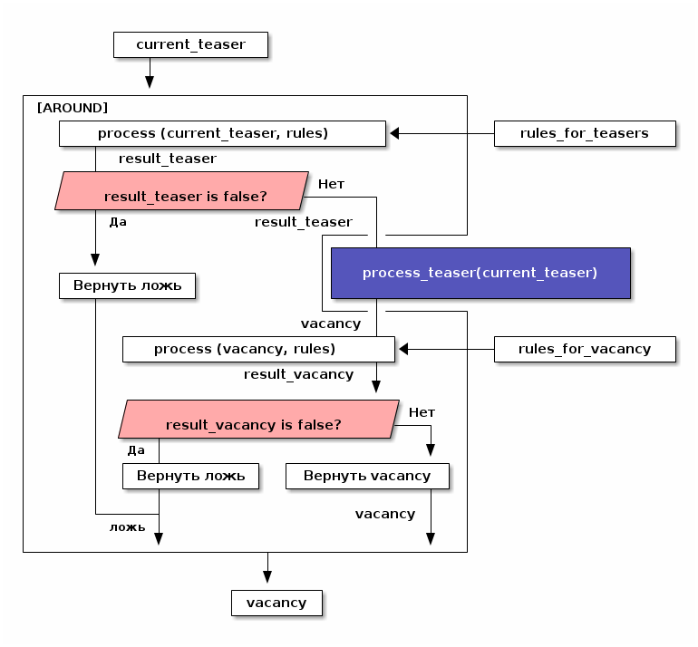

Модуль HeadHunter (Vacancy Operations)
Table of Contents
1 Как это работает?
1.1 Источник вакансий
Пусть у нас есть источник вакансий, например, hh.ru. На нем можно сформулировать запрос и получить выборку в виде списка тизеров вакансий, каждый из которых ведет на полное описание вакансии.
./img/warehouse.jpg]]
1.2 Фабрика генераторов вакансий
Пусть у нас есть фабрика генераторов назовем её factory, которая принимает
источник вакансий и параметры запроса (например: профессиональную область,
специализацию, город) и возвращает функцию-генератор в замыкании.
./img/factory.jpg]]
Эта функция-генератор при каждом своем вызове вернет одну вакансию или ложь если все
вакансии кончились (или сервер вернул 404-ую ошибку).
./img/generator.jpg]]
Внутри себя эта функция по мере необходимости загружает и разбирает сначала тизеры
вакансий, а потом и сами вакансии. При этом процесс превращения тизера в вакансию
(process-teaser) вынесен из замыкания, т.к. не зависит от замкнутых переменных.
(in-package #:moto) <<make_hh_url>> <<hh_get_page>> <<hh_parse_vacancy_teasers>> <<hh_parse_vacancy>> (let ((cookie-jar (make-instance 'drakma:cookie-jar))) ;; ------- эта функция вызывается из get-vacancy, которую возвращает factory (defmethod process-teaser (current-teaser src-account referer) (dbg ":process-teaser:") (let* ((vac-plist (plistp current-teaser)) ;; (none (print vac-plist)) (vac-id (if vac-plist (getf (getf current-teaser :teaser) :id) (getf (getf (car current-teaser) :vacancy) :id))) (vacancy-page (format nil "https://spb.hh.ru/vacancy/~A" vac-id))) (multiple-value-bind (vacancy new-cookies ref-url) (hh-get-page vacancy-page cookie-jar src-account referer) (setf cookie-jar new-cookies) (restart-case (aif (hh-parse-vacancy vacancy) (merge-plists current-teaser it) nil) (skip () nil))))) ;; ------- эта функция возвращает get-vacancy, которая является генератором вакансий (defmethod factory ((vac-src (eql 'hh)) src-account city prof-area &optional spec) (dbg ":factory:") ;; closure (let ((url (make-hh-url city prof-area spec)) (page 0) (teasers nil)) ;; returned function-generator in closure (alexandria:named-lambda get-vacancy () (labels (;; Загружает следующую страницу тизеров в TEASERS (LOAD-NEXT-TEASERS-PAGE () (dbg ":load-next-teasers-page: (page=~A)" page) (let* ((next-teasers-page-url (format nil url page)) (referer (if (= page 0) "https://spb.hh.ru" (format nil url (- page 1))))) (handler-case (multiple-value-bind (next-teasers-page new-cookies ref-url) (hh-get-page next-teasers-page-url cookie-jar src-account referer) (setf cookie-jar new-cookies) (setf teasers (hh-parse-vacancy-teasers next-teasers-page)) (incf page) (when (equal 0 (length teasers)) (dbg "~~ FIN(0)") (return-from get-vacancy 'nil))) (hh-404-error (err) (progn (dbg "~~ FIN(404) : ~A" (url err)) (return-from get-vacancy 'nil)))))) ;; Возвращает следующий тизер из пула тизеров. ;; Если пул пуст, то вызывает LOAD-NEXT-TEASER-PAGE чтобы наполнить его (GET-TEASER () (dbg ":get-teaser:") (when (equal 0 (length teasers)) (load-next-teasers-page)) (prog1 (car teasers) (setf teasers (cdr teasers))))) (tagbody get-new-teaser (let* ((teaser (get-teaser)) (current-vacancy (process-teaser teaser src-account (format nil url page)))) (if (null current-vacancy) (go get-new-teaser) (return-from get-vacancy current-vacancy))))))))) ;; (let ((gen (factory 'hh "spb" "Информационные технологии, интернет, телеком" ;; "Программирование, Разработка"))) ;; (loop :for i :from 1 :to 100 :do ;; ;; (dbg "~A" i) ;; (let ((vacancy (funcall gen))) ;; (when (null vacancy) ;; (return))))))
Для работы этому генератору нужно уметь:
- Собирать URL страницы, где лежат тизеры (краткие описания) вакансий из параметов запроса
(
make-hh-url) - Скачивать HTML-страницы (
hh-get-page) - Разбирать тизеры из html-кода (
hh-parse-vacancy-teasers) - Обрабатывать разобранные тизеры (
hh-parse-vacancy), чтобы получить по ним вакансии.
Реализуем все эти вещи:
1.2.1 Построение URL-ов для скачивания тизеров (make-hh-url)
Тизеры вакансий размещаются постранично, по 20 штук на странице, и мы можем собрать все страницы, если будем получать страницу за страницей, пока не получим страницу, на которой вакансий нет.
В качестве GET-параметров запросы указываются специализации и город. Значения cluster
и area не меняются. Поэтому, единственная сложность построения URL - это правильно
сформировать специализации.
(in-package #:moto) <<!make_specialization_hh_url_string>> (defun make-hh-url (city prof-area &optional specs) "https://spb.hh.ru/search/vacancy?text=&specialization=1&area=2&items_on_page=100&no_magic=true&page=~A") ;; test ;; (make-hh-url "spb" "Информационные технологии, интернет, телеком" "Программирование, Разработка")
- TODO Построение специализаций
Специализации задаются в формате "1.221", где цифра слева от точки представляет профессиональное направление, а справа - собственно специализацию. В интерфейсе допустимо выбрать одно направление и несколько специализаций в нем, при этом для каждой специализации формируется параметр GET-запроса. Допустимо выбрать только направление, без специализаций.
По этой причине мы должны иметь дерево специализаций и транслятор названий специализаций в их номера.
(in-package #:moto) <<prof_areas>> (defun make-specialization-hh-url-string (prof-area &optional specs) (let ((specialization (assoc prof-area *prof-areas* :test #'equal))) (when (null specialization) (err 'specialization-not-found)) (when (stringp specs) (setf specs (list specs))) (if (null specs) (concatenate 'string "&specialization=" (cadr specialization)) (format nil "~{&~A~}" (loop :for spec :in specs :collect (let ((spec (cdr (assoc spec (caddr specialization) :test #'equal)))) (when (null spec) (err 'spec-not-found)) (concatenate 'string "specialization=" (cadr specialization) "." spec))))))) ;; test ;; (make-specialization-hh-url-string "Информационные технологии, интернет, телеком") ;; (make-specialization-hh-url-string "Информационные технологии, интернет, телеком" '("Программирование, Разработка")) ;; (make-specialization-hh-url-string "Информационные технологии, интернет, телеком" "Программирование, Разработка") ;; (make-specialization-hh-url-string "Информационные технологии, интернет, телеком" ;; '("Программирование, Разработка" ;; "Web инженер" ;; "Web мастер" ;; "Стартапы" ;; "Управление проектами" ;; "Электронная коммерция"))
Дерево специализаций будем хранить в глобальном alist-е, т.к. оно никогда не меняется. Я не стал заполнять его целиком, ограничившись только профессиональной областью "ИТ". По необходимости заполню остальное.
(in-package #:moto) (defparameter *prof-areas* '(("Все профессиональные области" . ("")) ("Информационные технологии, интернет, телеком" . ("1" (("CRM системы" . "536") ("CTO, CIO, Директор по IT" . "3") ("Web инженер" . "9") ("Web мастер" . "10") ("Администратор баз данных" . "420") ("Аналитик" . "25") ("Арт-директор" . "30") ("Банковское ПО" . "395") ("Игровое ПО" . "475") ("Инженер" . "82") ("Интернет" . "89") ("Компьютерная безопасность" . "110") ("Консалтинг, Аутсорсинг" . "113") ("Контент" . "116") ("Маркетинг" . "137") ("Мультимедиа" . "161") ("Начальный уровень, Мало опыта" . "172") ("Оптимизация сайта (SEO)" . "400") ("Передача данных и доступ в интернет" . "203") ("Поддержка, Helpdesk" . "211") ("Программирование, Разработка" . "221") ("Продажи" . "225") ("Продюсер" . "232") ("Развитие бизнеса" . "246") ("Сетевые технологии" . "270") ("Системная интеграция" . "272") ("Системный администратор" . "273") ("Системы автоматизированного проектирования" . "274") ("Системы управления предприятием (ERP)" . "50") ("Сотовые, Беспроводные технологии" . "277") ("Стартапы" . "474") ("Телекоммуникации" . "295") ("Тестирование" . "117") ("Технический писатель" . "296") ("Управление проектами" . "327") ("Электронная коммерция" . "359")))) ("Бухгалтерия, управленческий учет, финансы предприятия" . ("2")) ("Маркетинг, реклама, PR" . ("3")) ("Административный персонал" . ("4")) ("Банки, инвестиции, лизинг" . ("5")) ("Управление персоналом, тренинги" . ("6")) ("Автомобильный бизнес" . ("7")) ("Безопасность" . ("8")) ("Высший менеджмент" . ("9")) ("Добыча сырья" . ("10")) ("Искусство, развлечения, масс-медиа" . ("11")) ("Консультирование" . ("12")) ("Медицина, фармацевтика" . ("13")) ("Наука, образование" . ("14")) ("Государственная служба, некоммерческие организации" . ("16")) ("Продажи" . ("17")) ("Производство" . ("18")) ("Страхование" . ("19")) ("Строительство, недвижимость" . ("20")) ("Транспорт, логистика" . ("21")) ("Туризм, гостиницы, рестораны" . ("22")) ("Юристы" . ("23")) ("Спортивные клубы, фитнес, салоны красоты" . ("24")) ("Инсталляция и сервис" . ("25")) ("Закупки" . ("26")) ("Начало карьеры, студенты" . ("15")) ("Домашний персонал" . ("27")) ("Рабочий персонал" . ("29"))))
1.2.2 Получение страниц (hh-get-page)
Так как мы хотим получать информацию, которая находится за авторизацией, нам нужно
обеспечить прозрачность авторизации, если ее в данный момент нет. hh_recovery_login решает эту
проблему.
Вот так мы можем получать страницы, к примеру те, на который находятся тизеры:
- Получаем страницу <-——————————————+
- Проверяем, залогинены ли мы |
- Если залогинены - отдаем страницу |
- Если не залогинены - логинимся и получаем страницу снова.—+
- Если во время логина произошла ошибка - сигнализируем условие.
Есть также одна особенность (типа баг) в результате которой drakma неправильно
воспринимает сформированные в get-запросе параметры и говорит что URI malformed. Мы
обходим это с помощью глобального флага *need-start*, что является временным
решением.
Если сервер возвращает 404 ошибку, функция сигнализирует condition hh-404-error.
(in-package #:moto) <<hh_recovery_login>> (define-condition hh-404-error (error) ((url :initarg :url :reader url) (text :initarg :text :reader text))) (defparameter *need-start* t) (defun hh-get-page (url cookie-jar src-account referer) "Получение страницы" ;; Если ни одного запроса еще не было - сделаем запрос к главной и снимем флаг (when *need-start* (drakma:http-request "https://spb.hh.ru/" :user-agent *user-agent* :redirect 10 :force-binary t :cookie-jar cookie-jar) (setf referer "https://spb.hh.ru/") (setf *need-start* nil)) ;; Делаем основной запрос, по урлу из параметров, сохраняя результат в response ;; и обновляя cookie-jar (let ((response "") (repeat-cnt 0)) (tagbody repeat (multiple-value-bind (body-or-stream status-code headers uri stream must-close reason-phrase) (drakma:http-request url :user-agent *user-agent* :force-binary t :cookie-jar cookie-jar :redirect 10 :additional-headers (append *additional-headers* `(("Referer" . ,referer)))) (dbg ":hh-get-page: ~A : ~A" status-code url) (when (equal 404 status-code) (error 'hh-404-error :url url :text (flexi-streams:octets-to-string body-or-stream :external-format :utf-8))) (setf response (flexi-streams:octets-to-string body-or-stream :external-format :utf-8))) ;; Если мы не залогинены: (unless (is-logged response) ;; Проверяем, не превышено ли кол-во попыток восстановления (when (> repeat-cnt 3) ;; Если их больше трех - сигнализируем ошибку (err "max recovery-login try")) ;; Пытаемся восстановить сессию (multiple-value-bind (recovery-html recovery-cookie-jar) (recovery-login src-account) (setf response recovery-html) (setf cookie-jar recovery-cookie-jar) (setf referer "https://spb.hh.ru/account/login")) ;; Увеличиваем счетчик попыток (incf repeat-cnt) ;; Пробуем загрузить страницу снова (go repeat))) ;; Возвращаем значения (values ;; (html5-parser:node-to-xmls (html5-parser:parse-html5-fragment response)) response cookie-jar url))) ;; (hh-get-page "https://spb.hh.ru/applicant/negotiations?wed=1" ;; (make-instance 'drakma:cookie-jar) ;; "https://spb.hh.ru/")
- Логин на источник (
recovery-login)Прежде чем мы получим возможность забирать авторизованную информацию с нашего источника, нам нужно иметь способ залогиниться на него. В дополнение к этому мы должны отслеживать момент потери авторизованной сесии и в каждый конкретный момент определять, залогинены ли мы. Обычно это можно определить по наличию формы для логина на любой загружаемой странице.
Мы хотим в случае обрыва сессии перелогиниваться прозрачно для всего остального кода, поэтому процедура логина должна вызвываться по необходимости из процедуры загрузки любой страницы. Также важно обрабатывать ошибки, которые могут произойти при логине, например, если неверен пароль.
Для всех этих целей мы передаем в
recovery-loginобъектsrc-account, который содержит все необходимое, чтобы восстановить сессию: логин, пароль и ФИО пользователя, по которому мы определяем, что успешно залогинились.recovery-loginвторым возвращаемым значением возвращает новый cookie-jar, который нужно использовать для работы внутри сессии.(in-package #:moto) <<data_for_account>> (defparameter *user-agent* "Mozilla/5.0 (X11; Ubuntu; Linux x86_64; rv:35.0) Gecko/20100101 Firefox/35.0") (defparameter *additional-headers* `(("Accept" . "text/html,application/xhtml+xml,application/xml;q=0.9,*/*;q=0.8") ("Accept-Language" . "ru-RU,ru;q=0.8,en-US;q=0.5,en;q=0.3") ("Accept-Charset" . "utf-8"))) (defparameter *cookies* nil) ;; deprecated, use cookie-jar in closure (defun is-logged (html) "Проверяем наличие в html блока 'Войти'" (let ((res (not (contains html "data-qa=\"mainmenu_loginForm\">Войти</div>")))) (dbg ":is-logged: ~A" res) res)) (defun get-cookies-alist (cookie-jar) "Получаем alist с печеньками из cookie-jar" (loop :for cookie :in (drakma:cookie-jar-cookies cookie-jar) :append (list (cons (drakma:cookie-name cookie) (drakma:cookie-value cookie))))) (defun recovery-login (src-account) ;; Сначала заходим на главную как будто первый раз, без печенек (setf drakma:*header-stream* nil) (let* ((start-uri "https://spb.hh.ru/") (cookie-jar (make-instance 'drakma:cookie-jar)) (additional-headers *additional-headers*) (response (drakma:http-request start-uri :user-agent *user-agent* :additional-headers additional-headers :force-binary t :cookie-jar cookie-jar :redirect 10 )) ;; (tree ;; (html5-parser:node-to-xmls ;; !=! ;; (html5-parser:parse-html5-fragment ;; (flexi-streams:octets-to-string response :external-format :utf-8) ;; :dom :xmls ;; ;; ) ;; )) ) ;; Теперь попробуем использовать печеньки для логина ;; GMT=3 ;; _xsrf= ;; hhrole=anonymous ;; hhtoken= ;; hhuid= ;; regions=2 ;; unique_banner_user= ;; И заходим с вот-таким гет-запросом: ;; username=avenger-f@ya.ru ;; password=jGwPswRAfU6sKEhVXX ;; backurl=https://spb.hh.ru/ ;; remember=yes ;; action="Войти" ;; _xsrf= ;; (setf drakma:*header-stream* *standard-output*) (let* ((post-parameters `(("username" . ,(src_login src-account)) ("password" . ,(src_password src-account)) ("backUrl" . "https://spb.hh.ru/") ("remember" . "yes") ("action" . "%D0%92%D0%BE%D0%B9%D1%82%D0%B8") ("_xsrf" . ,(cdr (assoc "_xsrf" (get-cookies-alist cookie-jar) :test #'equal))))) (xsrf (cdr (assoc "_xsrf" (get-cookies-alist cookie-jar) :test #'equal))) (cookie-jar-2 (make-instance 'drakma:cookie-jar :cookies (append (list (make-instance 'drakma:cookie :name "GMT" :value "3" :domain "spb.hh.ru") (make-instance 'drakma:cookie :name "_xsrf" :value xsrf :domain "spb.hh.ru")) (remove-if #'(lambda (x) (equal "crypted_id" (drakma:cookie-name x))) (drakma:cookie-jar-cookies cookie-jar))))) (response-2 (drakma:http-request "https://spb.hh.ru/account/login" :user-agent *user-agent* :method :post :parameters post-parameters :additional-headers (append *additional-headers* `(("Referer" . ,start-uri))) :cookie-jar cookie-jar-2 :force-binary t :redirect 10)) (html (flexi-streams:octets-to-string response-2 :external-format :utf-8))) (when (contains html "Неправильные имя и/или пароль - попробуйте, пожалуйста, снова.") (err "login failed")) (when (contains html "Что-то пошло не так") (err "login error")) (when (contains html (src_fio src-account)) (return-from recovery-login (values ;; (html5-parser:node-to-xmls (html5-parser:parse-html5-fragment html)) html cookie-jar-2))) (err "login exception"))))
Теперь надо создать хотя бы один логин
(in-package #:moto) (defparameter *hh_account* (make-srcaccount :user_id 1 :src_source "hh" :src_login "avenger-f@yandex.ru" :src_password "jGwPswRAfU6sKEhVXX" :src_fio "Михаил Михайлович Глухов" :state ":ACTIVE"))
1.2.3 Разбор тизеров вакансий (hh-parse-vacancy-teasers)
Функция hh-parse-vacancy-teasers получает на вход html страницы поисковой выдачи
и превращает его в список вакансий. Для этого она выполняет ряд операций, которые
можно поделить не несколько классов:
- Преобразование html-кода в дерево s-выражений
- Извлечение из этого дерева части, которая содержит поисковую выдачу
- Преобразование элементов форматирования, таких как div и span в "говорящие"
элементы дерева для повышения читаемости (названия для преобразования извлекаются
из атрибутов
classиdata-qa - Преобразование содержимого вакансий в plists, с отнесением отдельных элементов к разным разделам информации о вакансии (sections)
- Слияние разделов из разных plists и формирование вакансии, которая предавляет собой 2-х уровневое plist-дерево, в котором первый уровень - ключи разделов, а из значения представляют собой второй уровень и являются plist-ами
Типичная вакансия после обработки должна выглядеть примерно так:
(:VACANCY (:DATE "18 августа" :ID 22403675 :HREF "https://spb.hh.ru/vacancy/22403675" :NAME "Senior JavaScript/React разработчик") :COMPENSATION (:SALARY-MAX 230000 :SALARY-MIN 230000 :CURRENCY "RUR" :SALARY "230000" :SALARY-TEXT "от 230 000 руб.") :SHORT-DESCR (:REQUIREMENT "Опыт Frontend разработки от 3 лет. Опыт разработки SPA на React. Опыт работы с Redux и другими модулями экосистемы React..." :RESPONSIBILITY "Разработка большого SPA приложения на React. Участие в архитектурных и технологических решениях. Оценка сложностей и сроков реализации задач. ") :COMPANY (:ADDR "Санкт-Петербург" :EMP-NAME "ООО Смарт-Сервис" :HREF "/employer/2959988"))
Технические подробности о трансформации дерева - далее в этом разделе: Трансформация дерева]]
Если в вакансии указана зарплата, мы также получаем
- Валюту зарплаты (3х-буквенный идентификатор)
- Сумму
- Текстовое выражение, содержащее "от" или "от и до"
Иногда HeadHunter синдицирует вакансии с других платформ, к примеру с CAREER.RU, тогда в вакансии может отсутствовать работодатель.
Вот код преобразования, все вещи, от которых он зависит будут раскрыты в подразделах этого раздела.
(in-package #:moto) <<maptree_transform>> <<html_to_tree>> <<extract_search_results>> <<maptreefilter>> <<make_detect>> <<teaser_detectors>> <<plistp>> <<my_merge_plist>> <<tree_plist_p>> <<compactor>> (define-condition malformed-vacancy (error) ((text :initarg :text :reader text))) (defparameter *last-parse-data* nil) (defun hh-parse-vacancy-teasers (html) "Получение списка вакансий из html" (dbg ":hh-parse-vacancy-teasers:") (setf *last-parse-data* html) (->> (html-to-tree html) (extract-search-results) (maptreefilter) (detect-responder) (detect-rejecter) (detect-title) (detect-or-title-archived) (detect-schedule) (detect-responsibility) (detect-requirement) (detect-insider-teaser) (detect-company) (detect-company-anon) (detect-addr) (detect-compensation) (detect-teaser-finalizer) (mapcar #'(lambda (vacancy) (if (not (tree-plist-p vacancy)) (progn (dbg "[~A]" (bprint vacancy)) ;; error if malformed plist (error 'malformed-vacancy :text)) ;; else (compactor vacancy) ;; vacancy ))))) ;; (print (hh-parse-vacancy-teasers *last-parse-data*)) ;; (let ((temp-cookie-jar (make-instance 'drakma:cookie-jar))) ;; (hh-parse-vacancy-teasers ;; (hh-get-page "https://spb.hh.ru/search/vacancy?text=&specialization=1&area=2&salary=¤cy_code=RUR&only_with_salary=true&experience=doesNotMatter&order_by=salary_desc&search_period=30&items_on_page=100&no_magic=true" temp-cookie-jar "https://spb.hh.ru/"))) ;; (mapcar #'(lambda (x) ;; (del-vacancy (id x))) ;; (find-vacancy :state ":UNINTERESTING"))
- Парсер html-to-tree
Чтобы получить вакансии со страниц поисковой выдачи - напишем парсер, который переведет полученный html в более удобное лисп-дерево (
html-to-tree)(in-package #:moto) (defun html-to-tree (html) ;; (html5-parser:node-to-xmls (html5-parser:parse-html5-fragment html :dom :xmls ))
- Экстрактор поисковых результатов extractsearchresults
Затем нам понадобится отделить собственно поисковые результаты, с которыми будем работать:
(in-package #:moto) (defun extract-search-results (tree) (block subtree-extract (mtm (`("div" (("class" "search-result") ("data-qa" "vacancy-serp__results")) ,@rest) (return-from subtree-extract rest)) tree)))
- Фильтр-преобразователь дерева maptreefilter
Поисковые результаты представляют собой список деревьев, внутри которых много кода, относящегося к разметке. Из-за этого их сложно читать и анализировать. Но можно преобразовать эти деревья в более удобные для анализа, следуя следующему алгоритму:
- Проходя по каждому элементу дерева
- Если элемент является списком
- Если элемент - это '("target" "blank"), то удаляем его, записывая остаток списка (cdr) на его место, потому что этот элемент не несет никакой нужной нам информации.
- Если элемент начинается с "script" (т.е. мы обоснованно предполагаем, что это тег <script>, потому что нигде не употребляется атрибут "script"), то поступаем аналогично, удаляя его
- Если элемент начинается с "div" "span" или "a", то для начала отделим
атрибуты от его содержимого.
- Если существует атрибут "data-qa", то он станет новым именем элемента, в
противном случае
- Если существует атрибут "class", то он будет новым именем элемента.
- Если есть новое имя элемента:
- Существуют блоки с именами, которые нам полностью неинтересны, поэтому мы
можем прямо здесь заменить их на их строковые имена, чтобы сделать все более
читаемым. Если мы нашли такой блок - то сделаем это. В противном случае:
- Удалим атрибуты "data-qa" и "class" из списка атрибутов
- Запишем новое имя элемента на место "div" или "span"
- Запишем обновленные атрибуты на место старых
- Существуют блоки с именами, которые нам полностью неинтересны, поэтому мы
можем прямо здесь заменить их на их строковые имена, чтобы сделать все более
читаемым. Если мы нашли такой блок - то сделаем это. В противном случае:
- Если существует атрибут "data-qa", то он станет новым именем элемента, в
противном случае
- Если элемент является списком
Реализуем этот алгоритм. Для поиска атрибутов будем использовать функцию
get-attr, которая превращает атрибуты в plist и ищет в нем.(in-package #:moto) (defun attrs-to-plist (attrs) (mapcan #'(lambda (x) (list (intern (string-upcase (car x)) :keyword) (cadr x))) attrs)) ;; (attrs-to-plist '(("href" "/employer/3127") ("class" "bloko-link bloko-link_secondary") ;; ("data-qa" "vacancy-serp__vacancy-employer"))) ;; => (:HREF "/employer/3127" :CLASS "bloko-link bloko-link_secondary" :DATA-QA ;; "vacancy-serp__vacancy-employer") (defun plist-to-attrs (attrs) (loop :for attr :in attrs :by #'cddr :collect (list (string-downcase (symbol-name attr)) (getf attrs attr)))) ;; (plist-to-attrs '(:HREF "/employer/3127" :CLASS "bloko-link bloko-link_secondary" :DATA-QA ;; "vacancy-serp__vacancy-employer")) ;; => (("href" "/employer/3127") ("class" "bloko-link bloko-link_secondary") ;; ("data-qa" "vacancy-serp__vacancy-employer")) (defun maptreefilter (tree) (when (listp tree) (when (and (listp (car tree)) (equal '("target" "_blank") (car tree))) (setf tree (cdr tree))) (when (and (listp (car tree)) (equal "script" (caar tree))) (setf tree (cdr tree))) (when (and (listp (car tree)) ;; fix error if car is not list (or (equal "div" (caar tree)) (equal "span" (caar tree)) (equal "a" (caar tree)) (equal "td" (caar tree)) (equal "th" (caar tree)) (equal "table" (caar tree)) )) (let ((attrs (attrs-to-plist (cadar tree))) (rest (cddar tree)) (name nil)) ;; data-qa is primary target for new name (aif (getf attrs :data-qa) (progn (setf name it)) ;; else: class is secondary target for new name (aif (getf attrs :class) (progn (setf name it)))) (when name (if (or (equal name "search-result-description__item") (equal name "search-result-item__control")) ;; Убиваем ненужное, если оно есть (setf (car tree) name) ;; else (progn (remf attrs :data-qa) (remf attrs :class) (setf (caar tree) name) ;; new name (setf (cadar tree) (plist-to-attrs attrs)) ;; new attrs )))))) (cond ((null tree) nil) ((atom tree) tree) (t (cons (maptreefilter (car tree)) (maptreefilter (cdr tree))))))
- Проходя по каждому элементу дерева
- Макрос для создания шаблонных преобразователей make-detect
Этот макрос формирует функции вида detect-* которые осуществляют преобразование дерева в соответствии с шаблоном, переданным в body
(in-package #:moto) (defmacro make-detect ((name) &body body) (let ((param (gensym))) `(defun ,(intern (format nil "DETECT-~A" (string-upcase (symbol-name name)))) (,param) (mtm ,@body ,param))))
- Набор шаблонных макросов-преобразователей для тизеров
Эти макросы по шаблону преобразуют тизер вакансии в plist
(in-package #:moto) (make-detect (responder) (`("vacancy-serp__vacancy_responded" (("href" ,_)) "Вы откликнулись") `(:teaser (:status "responded")))) (make-detect (rejecter) (`("vacancy-serp__vacancy_rejected" (("href" "/negotiations/gotopic?vacancy_id=20255184")) "Вам отказали") `(:teaser (:status "rejected")))) (make-detect (title) (`("search-result-item__head" NIL ("vacancy-serp__vacancy-title" (("href" ,href) ,@rest) ,title)) `(:teaser (:id ,(parse-integer (car (last (split-sequence:split-sequence #\/ href)))) :href ,href :name ,title :archived nil)))) (make-detect (or-title-archived) (`("search-result-item__head" NIL ("vacancy-serp__vacancy-title" (("href" ,href) ,@rest) ,title) " (" ("strong" (("data-qa" "vacancy-serp__vacancy_archived")) "Вакансия была перенесена в архив") ")") `(:teaser (:id ,(parse-integer (car (last (split-sequence:split-sequence #\/ href)))) :href ,href :name ,title :archived t)))) (make-detect (schedule) (`("vacancy-serp__vacancy-work-schedule" NIL ,schedule) `(:teaser-conditions (:schedule schedule)))) (make-detect (responsibility) (`("vacancy-serp__vacancy_snippet_responsibility" NIL ,responsibility) `(:teaser-descr (:responsibility ,responsibility)))) (make-detect (requirement) (`("vacancy-serp__vacancy_snippet_requirement" NIL ,requirement) `(:teaser-descr (:requirement ,requirement)))) (make-detect (insider-teaser) (`("vacancy-serp__vacancy-interview-insider" (("href" ,insider)) "Посмотреть интервью о жизни в компании") `(:teaser-descr (:insider ,insider)))) (make-detect (company) (`("search-result-item__company" NIL ("vacancy-serp__vacancy-employer" (("href" ,href)) ,emp-name) ,@rest) `(:teaser-emp (:emp-name ,emp-name :href ,href :emp-id ,(parse-integer (car (last (split-sequence:split-sequence #\/ href))) :junk-allowed t))))) (make-detect (company-anon) (`("search-result-item__company" NIL ,anon ,@rest) `(:teaser-emp (:emp-name ,anon :anon t)))) (make-detect (addr) (`("search-result-item__info" NIL ("vacancy-serp__vacancy-address" NIL ,address ,@restaddr) " • " ("vacancy-serp__vacancy-date" NIL ,date) ,@rest) `(:teaser-emp (:addr ,address) :teaser (:date ,date)))) (make-detect (compensation) (`("vacancy-serp__vacancy-compensation" NIL ("meta" (("itemprop" "salaryCurrency") ("content" ,currency))) ("meta" (("itemprop" "baseSalary") ("content" ,salary))) ,salary-text) (let ((currency currency) (salary-text (ppcre:regex-replace-all " " salary-text "")) (salary-min nil) (salary-max nil)) (cond ((equal currency "RUR") (setf salary-text (ppcre:regex-replace-all " руб." salary-text ""))) ((equal currency "USD") (setf salary-text (ppcre:regex-replace-all " USD" salary-text ""))) ((equal currency "EUR") (setf salary-text (ppcre:regex-replace-all " EUR" salary-text ""))) ((equal currency "UAH") (setf salary-text (ppcre:regex-replace-all " грн." salary-text ""))) ((equal currency nil) 'nil) (t (progn (print currency) (err 'unk-currency)))) (cond ((search "от " salary-text) (setf salary-min (parse-integer (ppcre:regex-replace-all "от " salary-text "")))) ((search "до " salary-text) (setf salary-max (parse-integer (ppcre:regex-replace-all "до " salary-text "")))) ((search "–" salary-text) (let ((splt (ppcre:split "–" salary-text))) (setf salary-min (parse-integer (car splt))) (setf salary-max (parse-integer (cadr splt))))) ((search "-" salary-text) (let ((splt (ppcre:split "-" salary-text))) (setf salary-min (parse-integer (car splt))) (setf salary-max (parse-integer (cadr splt)))))) (when (null salary-min) (setf salary-min salary-max)) (when (null salary-max) (setf salary-max salary-min)) `(:teaser-compensation (:currency ,currency :salary ,salary :salary-text ,salary-text :salary-min ,salary-min :salary-max ,salary-max))))) (make-detect (teaser-finalizer) (`(,_ NIL ,_ ("search-result-description" NIL "search-result-description__item" ("search-result-description__item search-result-description__item_primary" NIL ,@contents) ,@rest)) contents))
- Plistp
Это функция-предикат, которая возвращает свой параметр, если он является правильным plist и NIL в противном случае.
(in-package #:moto) (defun plistp (param) "Test wheather PARAM is a properly formed pparam." (when (listp param) (loop :for rest :on param :by #'cddr :unless (and (keywordp (car rest)) (cdr rest)) :do (return nil) :finally (return param))))
- mymergeplist
Это функция, которая правильным образом сливает вместе два plist-а
(in-package #:moto) (defun my-merge-plists (p1 p2) (loop with notfound = '#:notfound for (indicator value) on p1 by #'cddr when (eq (getf p2 indicator notfound) notfound) do (progn (push value p2) (push indicator p2))) p2)
- tree-plist-p
Это функция возвращает T если список, переданный в параметре является правильным plist-деревом.
(in-package #:moto) (defun tree-plist-p (pl) "Returns T if PL is a plist (list with alternating keyword elements). " (cond ((null pl) t) ((and (listp pl) (keywordp (car pl)) (cdr pl)) (tree-plist-p (cddr pl))) ((and (listp pl) (listp (car pl))) (and (tree-plist-p (car pl)) (tree-plist-p (cdr pl)))) (t (progn ;; (print pl) nil))))
- compactor
Эта функция проходит по каждому элементу plist-tree, которое передано в параметре. Каждый элемент оценивается, и разделяется на имя секции и значение. Все элементы у которых одинаковое имя секции помещаются в эту секцию. Таким образом осуществляется перегруппировка входных данных
(in-package #:moto) (defun compactor (param) (let ((ht (make-hash-table :test #'equal)) (result-vacancy)) (mapcar #'(lambda (section) (assert (equal (logand (length section) 1) 0)) ;; even length (loop :for key :in section :by #'cddr :do (assert (equal (type-of key) 'keyword)) (let ((new-val (getf section key))) (assert (plistp new-val)) (multiple-value-bind (old-val present) (gethash key ht) (setf (gethash key ht) (if (not present) new-val (my-merge-plists old-val new-val))))))) param) (maphash #'(lambda (k v) (push (list k v) result-vacancy)) ht) (mapcan #'identity (reverse result-vacancy))))
- Трансформация дерева
Описание вакансии (или ее тизера), после преобразования из html, представляет из себя дерево, в котором нам важна структура, так как требования, обязанности и прочее описываются списком. В этом списке много лишнего форматирования, для удаления которого нам необходимо уметь преобразовывать (трансформировать) дерево.
- Match-tree
Чтобы эффективнее (с точки зрения скорости написания кода) разбирать вакансии мы разберем всю полученную страницу в дерево, из которого будем извлекать необходимые нам элементы.
Чтобы делать это будем обходить дерево, сопоставляя каждый узел с предикатом, в который скомпилируется образец. Начнем с обхода дерева, для этого напишем рекурсивную функцию
match-tree, которую определим с помощьюlabels, чтобы окружить ее формойletс аккумулятором.Определим параметры этой функции:
tree- под-дерево, которое мы рекурсивно обходимpredict- функция-предикат, которая может совпасть с обходимым поддеревомif-match- параметр чтобы иметь возможность передаватьстратегию. Про стратегии поговорим чуть позже.
(labels ((match-tree (tree f-predict &optional (if-match :return-first-match)) (cond ((null tree) nil) ((atom tree) nil) (t <<cons>>)))) <<call>>)
Теперь переходим к рассмотрению плейсхолдера
cons, который выполняет основную работу. В первую очередь нам следует сравнить текущий узел с параметромpredictи в случае еслиpredictвернул T - выполнить какие-то действия. В противном случае - обрабатываем поддеревья этого узла.(if (funcall f-predict tree) <<match_ok>> <<sub_trees>>)(cons (funcall #'match-tree (car tree) f-predict if-match) (funcall #'match-tree (cdr tree) f-predict if-match))
Теперь о стратегиях
В случае, когда узел совпал с
predictмы можем реализовать следующие стратегии:- Немедленно вернуть совпавший узел и более не обрабатывать никакие узлы.
- Прекратить обработку всех подузлов совпавшего узла, запомнить его и перейти к обработке следующего за ним.
- Запомнить совпавший узел и продолжить обработку вглубь совпавшего узла, а затем и всех остальных узлов.
- Наиболее общий вариант - применить к сопавшему узлу переданную лямбда-функцию, которая может с ним что-то сделать - например записать в какую-нибудь переменную на более высоком уровне.
Реализуем эти стратегии друг за другом.
Реализуем выбор стратегии в общих чертах - будем использовать
condпо параметруif-match. В случае, если в этом параметре не лежит keyword symbol с именем стратегии - считаем, что там функция, если это не так - сигнализируем ошибкуstrategy-not-implemented(которая пока нигде не определена - я считаю что ее имя говорит само за себя).(cond ((equal if-match :return-first-match) <<return_first_match>>) ((equal if-match :return-first-level-match) <<return_first_level_match>>) ((equal if-match :return-all-match) <<return_all_match>>) ((equal 'function (type-of if-match)) (funcall if-match tree)) (t (error 'strategy-not-implemented)))
Теперь приступим к реализации (первой) стратегии: немедленного возврата совпавшего узла. Для этого нам понадобится определить внешнюю функцию
tree-match, чтобы возвращаться из нее, а не из текущего рекурсивного вызоваmatch-tree. Мы сделаем это несколько позже, а пока заполним плейсхолдерreturn-first-match:(return-from tree-match tree)Теперь переходим ко второй стратегии - прекратить обработку всех подузлов сопавшего узла, запомнить его и перейти к обработке следующего за ним. Нам понадобится переменная
collectчтобы хранить значения, запомним это и реализуем добавление узла в нее. После того, как узел сохранен, мы не проводим обработку его под-деревьев, а переходим в следующему узлу этого уровня.(setf collect (append collect (list tree)))И наконец, реализуем последнюю оставшуюся стратегию, которая представляет из себя расширение предыдущей, но с обработкой вложенных узлов. Так и запишем:
(progn <<return_first_level_match>> <<sub_trees>>)Теперь нам осталось лишь правильно возвращать результат. Если используются аккумулирующие стратегии, то мы возвращаем содержимое переменной
collect, в случае немедленного возврата совпавшего узла мы никогда не окажемся в этом месте, а в случае передачи вif-matchлямбда-фукции - мы будем считать, что она как-нибудь сама заботится о передачи значений. Поэтому всегда будем возвращатьcollect.(match-tree tree predict if-match) collect
Осталось обернуть это все во внешнюю функцию, с аккумулятором:
(defun tree-match (tree predict &optional (if-match :return-first-match)) (let ((collect)) <<cond_tree>>))
Но для удобной работы этого недостаточно, поэтому напишем компилер шаблона в соответствующий ему
predict. Этот компилер будет принимать в качестве параметра форму, которая будет связываться с элементами шаблона с помощьюdestructuring-bind. Попытка связывания будет проводиться для каждого элемента дерева. Ошибки, которые возникают в случае невозможности связывания, игнорируются.(in-package #:moto) (defmacro with-predict (pattern &body body) (let ((lambda-param (gensym))) `#'(lambda (,lambda-param) (handler-case (destructuring-bind ,pattern ,lambda-param ,@body) (sb-kernel::arg-count-error nil) (sb-kernel::defmacro-bogus-sublist-error nil))))) ;; (macroexpand-1 ' ;; (with-predict (a ((b c)) d &rest e) ;; (aif (and (string= a "div") ;; (string= c "title b-vacancy-title")) ;; (prog1 it ;; (setf **a** a) ;; (setf **b** b))))) ;; => #'(LAMBDA (LAMBDA-PARAM) ;; (HANDLER-CASE ;; (DESTRUCTURING-BIND ;; (A ((B C)) D &REST E) ;; LAMBDA-PARAM ;; (AIF (AND (STRING= A "div") (STRING= C "title b-vacancy-title")) ;; (PROG1 IT (SETF **A** A) (SETF **B** B)))) ;; (SB-KERNEL::ARG-COUNT-ERROR NIL) ;; (SB-KERNEL::DEFMACRO-BOGUS-SUBLIST-ERROR NIL))), T
Вот так, к примеру, это можно совместить с поиском по дереву:
(in-package #:moto) (tree-match '("div" (("class" "b-vacancy-custom g-round" ("meta" (("itemprop" "title") ("content" "Ведущий android-разработчик"))) ("h1" (("class" "title b-vacancy-title")) "Ведущий android-разработчик") ("table" (("class" "l")) ("tr" NIL ("td" (("colspan" "2") ("class" "l-cell"))) ("td" (("class" "l-cell"))))))) (("class" "g-round plus"))` ("meta" (("itemprop" "title") ("content" "Ведущий android-разработчик")))) (with-predict (a b &rest c) (aif (and (stringp a) (string= a "class")) (prog1 it (setf **a** a) (setf **b** b)))) :return-all-match)
Для еще большей лаконичности мы можем определить оборачивающий макрос, который позволит нам не писать ничего, кроме условия в
aif:(in-package #:moto) <<with_predict>> (defmacro with-predict-if (pattern &body condition) `(with-predict ,pattern (aif ,@condition (prog1 it ,@(mapcar #'(lambda (x) `(setf ,(intern (format nil "**~A**" (symbol-name x))) ,x)) (remove-if #'(lambda (x) (or (equal x '&rest) (equal x '&optional) (equal x '&body) (equal x '&key) (equal x '&allow-other-keys) (equal x '&environment) (equal x '&aux) (equal x '&whole) (equal x '&allow-other-keys))) (alexandria:flatten pattern))))))) ;; (macroexpand-1 ' ;; (with-predict-if (a b &rest c) ;; (and (stringp a) ;; (string= a "class")))) ;; => (WITH-PREDICT (A B &REST C) ;; (AIF (AND (STRINGP A) (STRING= A "class")) ;; (PROG1 IT ;; (SETF **A** A) ;; (SETF **B** B) ;; (SETF **C** C))))
Таким образом мы инжектируем переменные шаблона в глобальную область видимости, если они не определены в более высокоуровневом
let.Теперь мы можем использовать
tree-matchтак:(in-package #:moto) (print (tree-match '("div" (("class" "b-vacancy-custom g-round")) ("meta" (("itemprop" "title") ("content" "Ведущий android-разработчик"))) ("h1" (("class" "title b-vacancy-title")) "Ведущий android-разработчик") ("table" (("class" "l")) ("tbody" NIL ("tr" NIL ("td" (("colspan" "2") ("class" "l-cell")) ("div" (("class" "employer-marks g-clearfix")) ("div" (("class" "companyname")) ("a" (("itemprop" "hiringOrganization") ("href" "/employer/1529644")) "ООО Нимбл")))) ("td" (("class" "l-cell"))))))) (with-predict-if (a b &rest c) (and (stringp a) (string= a "class"))) :return-all-match)) ;; => (("class" "b-vacancy-custom g-round") ("class" "title b-vacancy-title") ;; ("class" "l") ("class" "l-cell") ("class" "employer-marks g-clearfix") ;; ("class" "companyname") ("class" "l-cell")) (print **b**) ;; => "l-cell"
Тут оставим адаптацию
with-predictдляmaptree-if, рассмотренного в следующем разделе(in-package #:moto) (defmacro with-predict-maptree (pattern condition replace tree) (let ((lambda-param (gensym))) `(maptree-if #'(lambda (,lambda-param) (and (consp ,lambda-param) (funcall (with-predict-if ,pattern ,condition) ,lambda-param))) ,replace ,tree))) ;; (macroexpand-1 ;; '(with-predict-maptree (a b &rest c) ;; (and (equal b 'ping)) ;; #'(lambda (x) ;; (values `(,**a** pong ,@(cddr x)) #'mapcar)) ;; '(progn (ping (ping ping (ping 1))) ping))) ;; (with-predict-maptree (a b &rest c) ;; (and (equal b 'ping)) ;; #'(lambda (x) ;; (values `(,**a** pong ,@(cddr x)) #'mapcar)) ;; '(progn (ping (ping ping (ping 1))) ping))
Ну и "всем дочитавшим до этого места" могу теперь сообщить, что применение pattern-matchinga из пакета
optimaделает вышеприведенный код существенно менее полезным :) - Maptree-if
Функция
maptree-if- рекурсивный преобразователь, который возвращает новое дерево, рекурсивно вызывая аргументtransformerнаsub-tree, которые удовлетворяют аргументуpredicate.Аргумент
predicateдолжен быть лямбда-функцией, которая принимает на входsubtreeи возвращает T или NILАргумент
transformerдолжен быть лямбда-функцией, которая принимает на входsubtreeи возвращаетatomилиsubtreeв первом параметре, а во втором может возвратить функциюcontrol. Если эта функция возвращена, тогда дерево возвращается с замененнымtransformer-ом узлами по следующему алгоритму:(funcall control #'(lambda (x) (maptree-if predicate transformer x)) transformed-tree)В противном случае оно возвращается как есть.
Собственно функция
maptree-if, которую мы помещаем в утилиты:(in-package #:moto) (defun maptree-if (predicate transformer tree) (multiple-value-bind (t-tree control) (if (funcall predicate tree) (funcall transformer tree) (values tree #'mapcar)) (if (and (consp t-tree) control) (funcall control #'(lambda (x) (maptree-if predicate transformer x)) t-tree) t-tree)))
Несколько примеров работы:
(in-package #:moto) ;; Нерекурсивная замена (maptree-if #'(lambda (x) (and (consp x) (eq (car x) 'ping))) #'(lambda (x) `(pong ,@(cdr x))) '(progn (ping (ping (ping 1))))) ;; => (PROGN (PONG (PING (PING 1)))) ;; Рекурсивная замена (maptree-if #'(lambda (x) (and (consp x) (eq (car x) 'ping))) #'(lambda (x) (values `(pong ,@(cdr x)) #'mapcar)) '(progn (ping (ping (ping 1))) ping)) ;; => (PROGN (PONG (PONG (PONG 1))))
- Maptree-transform
maptree-transform- это аналог maptree-if, но здесь одна функция (predicate-transformer) и ищет и трансформирует узел дерева:(in-package #:moto) (defun maptree-transform (predicate-transformer tree) (multiple-value-bind (t-tree control) (aif (funcall predicate-transformer tree) it (values tree #'mapcar)) (if (and (consp t-tree) control) (funcall control #'(lambda (x) (maptree-transform predicate-transformer x)) t-tree) t-tree))) ;; mtm - синтаксический сахар для maptree-transform (defmacro mtm (transformer tree) (let ((lambda-param (gensym))) `(maptree-transform #'(lambda (,lambda-param) (values (match ,lambda-param ,transformer) #'mapcar)) ,tree)))
- Match-tree
1.2.4 Разбор вакансий (hh-parse-vacancy)
Функция hh-parse-vacancy обрабатывает вакансии примерно так же как
hh-parse-vacancy-teaser обрабатывает тизеры вакансий: получает на вход html и
превращает его в вакансию. Для этого она использует те же шаги и те же функции:
- Преобразование html-кода в дерево s-выражений
- Извлечение из этого дерева части, которая содержит вакансию
- Преобразование элементов форматирования, таких как div и span в "говорящие"
элементы дерева для повышения читаемости (названия для преобразования извлекаются
из атрибутов
classиdata-qa - Преобразование содержимого вакансии в plists, с отнесением отдельных элементов к разным разделам информации о вакансии (sections)
- Слияние разделов из разных plists и формирование вакансии, которая предавляет собой 2-х уровневое plist-дерево, в котором первый уровень - ключи разделов, а из значения представляют собой второй уровень и являются plist-ами
(in-package #:moto) <<extract_vacancy>> <<transform_description>> <<vacancy_detectors>> (defun hh-parse-vacancy (html) "Получение вакансии из html" (dbg ":hh-parse-vacancy:") (setf *last-parse-data* html) (let ((candidat (->> (html-to-tree html) (extract-vacancy) (maptreefilter) (detect-script) (detect-insider-vacancy) (detect-branded) (detect-branded2) (detect-gap) (detect-vacancy-custom) (detect-l) (detect-emp) (detect-vacancy-info) (detect-vac-info-tr) (detect-or-vac-info-tr-no-salary) (detect-container) (detect-col-1) (detect-hypercontext) (detect-descr-outer-block) (detect-longdescr) (detect-vacancy-address) (detect-jobtype) (detect-closed-contacts) (detect-contacts-body) (detect-contacts-fio) (detect-contacts-list) (detect-contacts-tr) (detect-contacts-phone) (detect-contacts-mail) (detect-logo) (detect-date) (detect-or-date-with-disabled) (detect-vacancy-view-banners) (detect-column-2) (detect-response-block) (detect-skill-element) (detect-skills) (detect-joblocation) (detect-handicap) (detect-compact-l) (detect-compact-contacts) (detect-compact-info) (detect-columns) (detect-branded-hype) (detect-meta) (detect-compact-infoblock) ))) (if (not (tree-plist-p candidat)) (progn (dbg "~A" (bprint candidat)) (error 'malformed-vacancy :text)) (let* ((non-compacted-vacancy candidat) (compacted-vacancy (compactor candidat)) ) ;; non-compacted-vacancy compacted-vacancy )) ;; (print candidat) ;; (print (compactor candidat)) ;; candidat )) ;; (print (hh-parse-vacancy *last-parse-data*)) ;; (defparameter *last-vacancy-html* ;; (let ((temp-cookie-jar (make-instance 'drakma:cookie-jar))) ;; (hh-get-page "https://spb.hh.ru/vacancy/17527227" temp-cookie-jar *hh_account* "https://spb.hh.ru/"))) ;; (defparameter *last-vacancy-html* ;; (let ((temp-cookie-jar (make-instance 'drakma:cookie-jar))) ;; (hh-get-page "https://spb.hh.ru/vacancy/18108178" temp-cookie-jar *hh_account* "https://spb.hh.ru/"))) ;; (defparameter *last-vacancy-html* ;; (let ((temp-cookie-jar (make-instance 'drakma:cookie-jar))) ;; (hh-get-page "https://spb.hh.ru/vacancy/17527227" temp-cookie-jar *hh_account* "https://spb.hh.ru/"))) ;; (defparameter *last-vacancy-html* ;; (let ((temp-cookie-jar (make-instance 'drakma:cookie-jar))) ;; (hh-get-page "https://spb.hh.ru/vacancy/22262525" temp-cookie-jar *hh_account* "https://spb.hh.ru/"))) ;; (defparameter *last-vacancy-html* ;; (let ((temp-cookie-jar (make-instance 'drakma:cookie-jar))) ;; (hh-get-page "https://spb.hh.ru/vacancy/22518184" temp-cookie-jar *hh_account* "https://spb.hh.ru/"))) ;; (let ((sections (hh-parse-vacancy *last-vacancy-html*))) ;; (loop :for section-key :in sections by #'cddr :do ;; (format t "~%_______~%~A" (bprint (list section-key (getf sections section-key)))))) ;; (print (hh-parse-vacancy *last-vacancy-html*)) ;; (print ;; (let ((temp-cookie-jar (make-instance 'drakma:cookie-jar))) ;; (hh-parse-vacancy (hh-get-page "https://spb.hh.ru/vacancy/16606806" temp-cookie-jar *hh_account* "https://spb.hh.ru/"))))
- Экстрактор вакансии extract-vacancy
Затем нам понадобится выделить вакансию, с которыми будем работать:
(in-package #:moto) (defun extract-vacancy (tree) (block subtree-extract (mtm (`("div" (("class" "nopaddings") ("itemscope" "itemscope") ("itemtype" "http://schema.org/JobPosting")) ,@rest) (return-from subtree-extract rest)) tree)))
- Преобразователь описания вакансии
Теперь, можно написать функцию, которая трансформирует описание, очищая его от всего лишнего:
(in-package #:moto) (defun transform-description (tree-descr) (labels ((rem-space (tree) (cond ((consp tree) (cons (rem-space (car tree)) (rem-space (remove-if #'(lambda (x) (equal x " ")) (cdr tree))))) (t tree)))) (append `((:p)) (mtm (`("p" nil ,@in) `((:p) ,@in)) (mtm (`("ul" nil ,@in) `((:ul) ,@in)) (mtm (`("li" nil ,@in) `((:li) ,@in)) (mtm (`("em" nil ,@in) `((:b) ,@in)) (mtm (`("strong" nil ,@in) `((:b) ,@in)) (mtm (`("br") `((:br))) (rem-space tree-descr))))))))))
- Набор шаблонных макросов-преобразователей для вакансий
Эти макросы по шаблону преобразуют вакансии в plist
(in-package #:moto) (make-detect (script) (`("script" (("data-name" ,name) ("data-params" ,params))) `(:empty (:script ,name :params ,params)))) (make-detect (insider-vacancy) (`("bloko-gap bloko-gap_left" (("xmlns:b" "http://hhru.github.com/bloko/")) ("b-insider-interview" NIL ("a" (("href" ,insider-href)) "Посмотреть интервью о жизни в компании"))) `(:empty (:insider ,insider-href)))) (make-detect (branded) (`("vacancy-branded" NIL ,@data) `(:branded ,(block subtree-extract (mtm (`("l-paddings b-vacancy-desc g-user-content" NIL ,payload) (return-from subtree-extract payload)) data))))) (make-detect (branded2) (`("branded-vacancy" NIL ,content ,@_) `(:branded-vacancy ,content))) (make-detect (gap) (`("bloko-gap bloko-gap_bottom bloko-gap_left" NIL ,@_) `(:empty (:gap "controls")))) (make-detect (vacancy-custom) (`("b-vacancy-custom g-round" NIL ("meta" (("itemprop" "title") ("content" ,_))) ("h1" (("class" "title b-vacancy-title")) ,title) ,@emp) `(:vacancy (:title ,title) :emp ,emp))) (make-detect (l) (`("l" NIL ("tbody" NIL ("tr" NIL ("l-cell" (("colspan" "2")) ,@l) ("l-cell" ,@_)))) `(:l ,l))) (make-detect (emp) (`("employer-marks g-clearfix" NIL ("companyname" NIL ("a" (("itemprop" "hiringOrganization") ("href" ,emp-href)) ,emp-name) ,@_)) `(:emp-name ,emp-name :emp-href ,emp-href))) (make-detect (vacancy-info) (`("b-vacancy-info" NIL ("l-content-3colums" NIL ("tbody" NIL ("tr" NIL ("l-content-colum-1 b-v-info-title" NIL ("l-paddings" NIL "Уровень зарплаты")) ("l-content-colum-2 b-v-info-title" NIL ("l-paddings" NIL "Город")) ("l-content-colum-3 b-v-info-title" NIL ("l-paddings" NIL "Требуемый опыт работы"))) ,info ))) `(:vac-info ,info))) (make-detect (vac-info-tr) (`("tr" NIL ("l-content-colum-1 b-v-info-content" NIL ("l-paddings" NIL ("meta" (("itemprop" "salaryCurrency") ("content" ,currency))) ("meta" (("itemprop" "baseSalary") ("content" ,base-salary))) ,salary-text)) ("l-content-colum-2 b-v-info-content" NIL ("l-paddings" NIL ,city ,@metro)) ("l-content-colum-3 b-v-info-content" NIL ("l-paddings" (("itemprop" "experienceRequirements")) ,exp))) `(:vacancy-compensation (:currency ,currency :base-salary ,base-salary :salary-text ,salary-text) :vacancy-place (:city ,city) :vacancy-exp (:exp ,exp) :vacancy-place (:metro ,(mapcar #'(lambda (x) (car (last x))) (remove-if-not #'listp metro)))))) (make-detect (or-vac-info-tr-no-salary) (`("tr" NIL ("l-content-colum-1 b-v-info-content" NIL ("l-paddings" NIL " з/п не указана")) ("l-content-colum-2 b-v-info-content" NIL ("l-paddings" NIL ,city ,@metro)) ("l-content-colum-3 b-v-info-content" NIL ("l-paddings" (("itemprop" "experienceRequirements")) ,exp))) `(:vacancy-place (:city ,city) :vacancy-exp (:exp ,exp) :vacancy-place (:metro ,(mapcar #'(lambda (x) (car (last x))) (remove-if-not #'listp metro)))))) (make-detect (container) (`("l-content-2colums b-vacancy-container" NIL ("tbody" NIL ("tr" NIL ,col-1 ,col-2))) `(:cols (:col-1 ,col-1 :col-2 ,col-2)))) (make-detect (col-1) (`("l-content-colum-1" (("colspan" "2")) ,hypercontext ,_) ;; response-block `(:hypercontext ,hypercontext))) (make-detect (hypercontext) (`("div" (("id" "hypercontext")) ("index" NIL ,@rest)) `(:hype ,rest))) (make-detect (descr-outer-block) (`("bloko-gap bloko-gap_bottom" NIL ("l-paddings b-vacancy-desc g-user-content" NIL ,descr)) `(:vacancy-descr ,descr))) (make-detect (longdescr) (`("b-vacancy-desc-wrapper" (("itemprop" "description")) ,@descr) `(:long-descr ,(transform-description descr)))) (make-detect (vacancy-address) (`(,(or "span" "b-vacancy-address l-paddings") (("itemprop" "jobLocation") ("itemscope" "itemscope") ("itemtype" "http://schema.org/Place")) ("meta" (("itemprop" "name") ("content" ,_))) ("h3" (("class" "b-subtitle")) "Адрес") ("b-employer-office-address" (("itemprop" "address") ("itemscope" "itemscope") ("itemtype" "http://schema.org/PostalAddress")) ("meta" (("itemprop" "streetAddress") ("content" ,street-addr))) ("div" NIL ("vacancy-address-with-map" NIL ,addr-with-map) ,@_))) `(:addr (:street-addr ,street-addr :addr-with-map ,addr-with-map)))) (make-detect (jobtype) (`("b-vacancy-employmentmode l-paddings" NIL ("h3" (("class" "b-subtitle")) "Тип занятости") ("l-content-paddings" NIL ("span" (("itemprop" "employmentType")) ,emptype) ", " ("span" (("itemprop" "workHours")) ,workhours))) `(:vacancy-jobtype (:emptype ,emptype :workhours ,workhours)))) (make-detect (closed-contacts) (`("l-paddings" NIL ("noindex" NIL ("vacancy-contacts vacancy-contacts_closed" NIL (:EMPTY ,_) (:EMPTY ,_) ("h3" (("id" "expand-vacancy-contacts")) ("show-employer-contacts" (("data-toggle" "")) ("bloko-link-switch" NIL "Показать контактную информацию")) ("vacancy-contacts__title-opened" NIL "Контактная информация")) ,contacts))) `(:closed ,contacts))) (make-detect (contacts-body) (`("vacancy-contacts__body" NIL ("l-content-paddings" NIL ,@rest)) `(:contacts ,@rest))) (make-detect (contacts-fio) (`("vacancy-contacts__fio" NIL ,fio) `(:fio ,fio))) (make-detect (contacts-list) (`("vacancy-contacts__list" NIL ("tbody" NIL ,@rest)) `(:contacts-list ,rest))) (make-detect (contacts-tr) (`("tr" NIL ("vacancy-contacts__list-title" NIL ,_) ("td" NIL ,@contacts-data)) `(:contacts-tr ,contacts-data))) (make-detect (contacts-phone) (`("vacancy-contacts__phone" NIL ,phone ("vacancy-contacts__comment" NIL ,phone-comment)) `(:phone ,phone :phone-comment ,phone-comment))) (make-detect (contacts-mail) (`("vacancy-contacts__email" (("href" ,mail-link) ("rel" "nofollow")) ,email) `(:mail-link ,mail-link :email ,email))) (make-detect (contacts-tr) (`("tr" NIL ("vacancy-contacts__list-title" NIL ,_) ("td" NIL ,contacts-data)) `(:contacts-tr ,contacts-data))) (make-detect (contacts-list) (`("vacancy-contacts__list" NIL ("tbody" NIL ,@rest)) `(:contacts-list ,rest))) (make-detect (closed-contacts) (`("l-paddings" NIL ("noindex" NIL ("vacancy-contacts vacancy-contacts_closed" NIL (:EMPTY ,_) (:EMPTY ,_) ("h3" (("id" "expand-vacancy-contacts")) ("show-employer-contacts" (("data-toggle" "")) ("bloko-link-switch" NIL "Показать контактную информацию")) ("vacancy-contacts__title-opened" NIL "Контактная информация")) ,contacts))) contacts)) (make-detect (logo) (`("b-vacancy-companylogo" NIL ("a" (("href" ,logo-href)) ("img" (("src" ,logo-img) ("border" "0") ("alt" ,logo-alt))))) `(:logo-href ,logo-href :logo-img ,logo-img :logo-alt ,logo-alt))) (make-detect (date) (`("l-content-paddings" NIL ("vacancy-sidebar" NIL "Дата публикации вакансии " ("time" (("class" "vacancy-sidebar__publication-date") ("itemprop" "datePosted") ("datetime" ,datetime)) ,date-text)) ,@_) `(:datetime ,datetime :date-text ,date-text :disabled nil))) (make-detect (or-date-with-disabled) (`("l-content-paddings" NIL ("vacancy-sidebar" NIL "Дата публикации вакансии " ("time" (("class" "vacancy-sidebar__publication-date") ("itemprop" "datePosted") ("datetime" ,datetime)) ,date-text)) ("vacancy__print-info vacancy__print-info_noscreen" NIL "Вакансия доступна для соискателей с инвалидностью")) `(:datetime ,datetime :date-text ,date-text :disabled t))) (make-detect (response-block) (`("vacancy-response-block HH-VacancyResponsePopup-ResponseBlock" NIL ,@_) `(:response-block "empty"))) (make-detect (vacancy-view-banners) (`("vacancy-view-banners" NIL ,@_) `(:empty (:vacancy-view-banners "empty")))) (make-detect (column-2) (`("l-content-colum-2" NIL ,logo ,date ,@_) `(:column-2 (:vacancy-logo ,logo :vacancy-date ,date)))) (make-detect (meta) (`("meta" (("itemprop" ,prop) ("content" ,content))) `(:meta (,(intern (string-upcase prop) :keyword) ,content)))) (make-detect (skill-element) (`("skills-element" (("data-tag-id" ,tag)) ("bloko-tag__section bloko-tag__section_text" (("title" ,title)) ("bloko-tag__text" NIL ,tagtext))) `(:skill (:tag ,tag :title ,title :tagtext ,tagtext)))) (make-detect (skills) (`("l-paddings" NIL ("h3" (("class" "b-subtitle")) "Ключевые навыки") ,@rest) `(:vacancy-skills (:list-of-skilss ,(mapcar #'cadadr rest))))) (make-detect (joblocation) (`("span" (("itemprop" "jobLocation") ("itemscope" "itemscope") ("itemtype" "http://schema.org/Place")) ("meta" (("itemprop" "name") ("content" ,name))) ("span" (("itemprop" "address") ("itemscope" "itemscope") ("itemtype" "http://schema.org/PostalAddress")) ("meta" (("itemprop" "addressLocality") ("content" ,addresslocality))))) `(:vacancy-address (:location ,name :addresslocality ,addresslocality)))) (make-detect (handicap) (`("vacancy__info vacancy__info_handicapped vacancy__info_noprint" NIL ("bloko-link-switch bloko-link-switch_inherited" (("data-toggle" "")) ,handicap) ("vacancy__info-expandable" NIL ("vacancy-info-tip" NIL"Это означает готовность компании рассматривать соискателей на равных на основании деловых качеств. Соискатель оценивает самостоятельно, насколько требования вакансии сопоставимы с его индивидуальными особенностями."))) `(:vacancy-handicap (:msg ,handicap)))) (make-detect (compact-l) (`(:VACANCY (:TITLE ,title) :EMP ((:L ((:EMP-NAME ,emp-name :EMP-HREF ,emp-href))))) `(:vacancy (:title ,title) :vacancy-emp (:EMP-NAME ,emp-name :EMP-HREF ,emp-href)))) (make-detect (compact-info) (`(:VAC-INFO ,info) `(,@info))) (make-detect (compact-contacts) (`(:CONTACTS (:FIO ,fio) (:CONTACTS-LIST ,contacts-trs)) `(:vacancy-contacts (:trs ,(append `((:CONTACTS-TR ((:FIO ,fio)))) contacts-trs))))) (make-detect (columns) (`(:COLS (:COL-1 (:HYPERCONTEXT (:HYPE (,@rest-1))) :COL-2 (:COLUMN-2 ,col-2))) `(:infoblock-1 ,rest-1 :infoblock-2 ,col-2))) (make-detect (branded-hype) (`(:BRANDED-VACANCY (:HYPE ((:BRANDED ,descr) ,@rest))) (mapcan #'identity (append `((:vacancy-descr ,descr)) rest)))) (make-detect (compact-infoblock) (`(:INFOBLOCK-1 ,infoblock-1 :INFOBLOCK-2 ,infoblock-2) (mapcan #'identity (append infoblock-1 (list infoblock-2)))))
1.3 Правила обработки тизеров и вакансий
Пусть у нас есть возможность создавать именованные правила, которые получают на
вход список, представляющий собой тизер или вакансию, анализируют его, и выполняют
какие-то действия. В качестве примера, мы могли бы создать правило, которое
увеличивает ранг вакансии если упомянуты какие-то технологии.
Создавая правило, нам необходимо передать конструктору правила:
- условие срабатывания (назовем его
antecedent) - код, который будет выполнен, в случае если условие на этой вакансии вернуло
истину(назоваем егоconsequent)
Примем соглашение, что правило, если оно сработало, возвращает два значения:
- первое - вакансию (
consequentможет вернуть модифицированную вакансию) - второе - указание процессору правил (например, прекратить обработку)
Мы реализуем правило, как сущность, чтобы воспользоваться всеми возможностями по сохранению, извлечению и другим операциям с сущностями.
1.3.1 Правила отсева тизеров
Какие же правила и действия можно составить для того чтобы отсеять неинтересные вакансии еще на стадии, когда мы видим только их тизеры?
В основном те, которые не устраивают по зарплате и те, у которых в названиях упомянуты неинтересные технологии.
К примеру, я не хочу даже смотреть на вакансии у которых не указана зарплата или она ниже минимально приемлимой:
(in-package #:moto) <<sugar_for_teaser_rules>> ;; (define-drop-teaser-rule ;; (salary-1-no (null (getf vacancy :compensation))) ;; (dbg "- no salary")) ;; (define-drop-teaser-rule (salary-2-low (or ;; (and (equal (getf vacancy :currency) "RUR") ;; (< (getf vacancy :salary-max) 90000)) ;; (and (equal (getf vacancy :currency) "USD") ;; (< (getf vacancy :salary-max) (floor 90000 58))) ;; (and (equal (getf vacancy :currency) "EUR") ;; (< (getf vacancy :salary-max) (floor 90000 61))) ;; )) ;; (dbg "- low salary")) ;; (define-drop-teaser-rule (iOS (contains-in-words (string-downcase (getf vacancy :name)) "ios")) ;; (dbg " - name contains iOS")) ;; (define-drop-teaser-rule (FrontEnd (contains-in-words (string-downcase (getf vacancy :name)) "front")) ;; (dbg " - name contains FrontEnd")) ;; (define-drop-teaser-rule (Manager (contains-in-words (string-downcase (getf vacancy :name)) "менеджер")) ;; (dbg " - name contains менеджер")) ;; (define-drop-teaser-rule (Saler (contains-in-words (string-downcase (getf vacancy :name)) "продаж")) ;; (dbg " - name contains продаж")) ;; (define-drop-teaser-rule (DotNet (contains-in-words (string-downcase (getf vacancy :name)) ".net")) ;; (dbg " - name contains .net")) ;; (define-drop-all-teaser-when-name-contains-rule ;; "Python" "Django" ;; "1C" "1С" ;; "C++" "С++" ;; "Ruby" "Ruby on Rails" ;; "Go" ;; "Q/A" "QA" ;; "Unity" "Unity3D" ;; "Flash" ;; "Java" ;; "Android" ;; "ASP" ;; "Objective-C" ;; "Delphi" ;; "Sharepoint" ;; "PL/SQL" ;; "Oracle" ;; "Node" ;; "тестировщик" ;; "Системный администратор" ;; "Трафик-менеджер" ;; "Traffic" "Трафик" ;; "Медиабайер" "Media Buyer" "Медиабаер" ;; "SAP" ;; "маркетолог" ;; "SMM" ;; "DevOps" ;; "Axapta" ;; "designer" ;; "Дизайнер" ;; "Designer" ;; "UX" ;; "по ремонту" ;; "Помощник" ;; "Верстальщик" ;; "Smolensk" "Львов") ;; (mapcar #'(lambda (x) ;; (del-vacancy (id x))) ;; (find-vacancy :state ":UNSORT"))
- Макросы для определения правил отсева тизеров
Для начала определим макрос, который создает правила отсева тизеров - эти правила отличаются тем, что всегда в первом параметре возвращают nil, а во втором -
:stop(in-package #:moto) (defmacro define-drop-teaser-rule ((name antecedent) &body consequent) `(define-rule (,(intern (concatenate 'string "DROP-TEASER-IF-"(symbol-name name))) ,antecedent) (dbg "drop-teaser-rule: [https://spb.hh.ru/vacancy/~A] ~A" (getf (getf vacancy :vacancy) :id) (getf (getf vacancy :vacancy) :name)) ;; (dbg (bprint vacancy)) ,@consequent (setf vacancy nil) :stop)) ;; expand ;; (print ;; (macroexpand-1 ;; '(define-drop-teaser-rule ;; (hi-salary-java (and (> (getf (getf vacancy :compensation) :salary) 70000) ;; (not (contains "Java" (getf (getf vacancy :vacancy) :name))))) ;; (print (getf vacancy :vacancy) :name) ;; (print (getf (getf vacancy :compensation) :salary))))) ;; (DEFINE-RULE (DROP-TEASER-IF-HI-SALARY-JAVA ;; (AND (> (GETF (GETF VACANCY :COMPENSATION) :SALARY) 70000) ;; (NOT ;; (CONTAINS "Java" (GETF (GETF VACANCY :VACANCY) :NAME))))) ;; (DBG "drop teaser: ~A-~A (~A) ~A" ;; (GETF (GETF VACANCY :COMPENSATION) :SALARY-MIN) ;; (GETF (GETF VACANCY :COMPENSATION) :SALARY-MAX) ;; (GETF (GETF VACANCY :COMPENSATION) :CURRENCY) ;; (GETF (GETF VACANCY :VACANCY) :NAME)) ;; (PRINT (GETF VACANCY :VACANCY) :NAME) ;; (PRINT (GETF (GETF VACANCY :COMPENSATION) :SALARY)) ;; (SETF VACANCY NIL) ;; :STOP)
Теперь определим расширение предыдущего макроса, которое создает правило, отсеивающее тизер, в случае, если в поле
:nameесть вхождение переданной строки(in-package #:moto) (defmacro define-drop-teaser-by-name-rule (str &body consequent) `(define-drop-teaser-rule (,(intern (concatenate 'string "NAME-CONTAINS-" (string-upcase (ppcre:regex-replace-all "\\s+" str "-")))) (contains (getf (getf vacancy :vacancy) :name) ,str)) (dbg " - name contains \"~A\"" ,str) ,@consequent)) ;; expand ;; (print ;; (macroexpand-1 ;; '(define-drop-teaser-by-name-rule "Android"))) ;; (DEFINE-DROP-TEASER-RULE (NAME-CONTAINS-ANDROID ;; (CONTAINS (GETF (GETF VACANCY :VACANCY) :NAME) ;; "Android")) ;; (DBG " - name contains \"~A\"" "Android")) ;; test ;; (define-drop-teaser-by-name-rule "Android") ;; (#<FUNCTION (LABELS DROP-TEASER-IF-NAME-CONTAINS-ANDROID-ANTECEDENT-G2507) ;; {100455A44B}> ;; #<FUNCTION (LABELS DROP-TEASER-IF-NAME-CONTAINS-ANDROID-CONSEQUENT-G2508) ;; {10045E5C4B}> ;; #<RULE {10045FE523}>)
Теперь в соответствии с принципом DRY определем макрос, который создаст список правил, отсеивающих тизеры по вхождению первой строки в поле
:name(in-package #:moto) (defmacro define-drop-all-teaser-when-name-contains-rule (&rest names) `(list ,@(loop :for name :in names :collect `(define-drop-teaser-by-name-rule ,name)))) ;; expand ;; (macroexpand-1 '(define-drop-all-teaser-when-name-contains-rule "IOS" "1С" "C++")) ;; (LIST (DEFINE-DROP-TEASER-BY-NAME-RULE "IOS") ;; (DEFINE-DROP-TEASER-BY-NAME-RULE "1С") ;; (DEFINE-DROP-TEASER-BY-NAME-RULE "C++")) ;; test ;; (define-drop-all-teaser-when-name-contains-rule "IOS" "1С" "C++")) ;; => ;; ((DROP-TEASER-IF-IF-NAME-CONTAINS-IOS-ANTECEDENT ;; DROP-TEASER-IF-IF-NAME-CONTAINS-IOS-CONSEQUENT) ;; (DROP-TEASER-IF-IF-NAME-CONTAINS-1С-ANTECEDENT ;; DROP-TEASER-IF-IF-NAME-CONTAINS-1С-CONSEQUENT) ;; (DROP-TEASER-IF-IF-NAME-CONTAINS-C++-ANTECEDENT ;; DROP-TEASER-IF-IF-NAME-CONTAINS-C++-CONSEQUENT))
1.3.2 TODO Правила анализа вакансий
Для начала определим макрос, который создает правила отсева вакансий - эти правила
отличаются тем, что всегда в первом параметре возвращают nil, а во втором - :stop
(in-package #:moto) (defmacro define-drop-vacancy-rule ((name antecedent) &body consequent) `(define-rule (,(intern (concatenate 'string "DROP-VACANCY-IF-"(symbol-name name))) ,antecedent) (dbg "drop vacancy: ~A : ~A" (getf (getf vacancy :vacancy) :name) (getf (getf vacancy :company) :emp-name)) ,@consequent (setf vacancy nil) :stop)) ;; expand ;; (print ;; (macroexpand-1 ;; '(define-drop-vacancy-rule (hi-salary-java (and (> (getf vacancy :salary) 70000) ;; (not (contains "Java" (getf vacancy :name))))) ;; (print (getf vacancy :name)) ;; (print (getf vacancy :salary))))) ;; (DEFINE-RULE (DROP-VACANCY-IF-HI-SALARY-JAVA ;; (AND (> (GETF VACANCY :SALARY) 70000) ;; (NOT (CONTAINS "Java" (GETF VACANCY :NAME))))) ;; (PRINT (GETF VACANCY :NAME)) ;; (PRINT (GETF VACANCY :SALARY)) ;; (SETF VACANCY NIL) ;; :STOP)
- TODO Я не хочу смотреть на вакансии, в компаниях где я уже работал.
(in-package #:moto) (defmacro define-drop-all-vacancy-when-already-worked (&rest employers) `(list ,@(loop :for emp :in employers :collect `(define-drop-vacancy-rule (already-worked (contains (getf (getf vacancy :company) :emp-name) ,emp)) (dbg " - already worked"))))) ;; expand ;; (macroexpand-1 '(define-drop-all-vacancy-when-already-worked "Webdom" "Semrush" "Пулково-Сервис")) ;; (LIST ;; (DEFINE-DROP-VACANCY-RULE (ALREADY-WORKED ;; (CONTAINS (GETF VACANCY :EMP-NAME) "Webdom")) ;; (DBG " - already worked")) ;; (DEFINE-DROP-VACANCY-RULE (ALREADY-WORKED ;; (CONTAINS (GETF VACANCY :EMP-NAME) "Semrush")) ;; (DBG " - already worked")) ;; (DEFINE-DROP-VACANCY-RULE (ALREADY-WORKED ;; (CONTAINS (GETF VACANCY :EMP-NAME) ;; "Пулково-Сервис")) ;; (DBG " - already worked"))) ;; test ;; (define-drop-all-vacancy-when-already-worked "Webdom" "Semrush" "Пулково-Сервис") ;; (define-drop-all-vacancy-when-already-worked "Webdom" "Semrush" "Пулково-Сервис" "FBS")
- TODO Если это уже существующая в базе вакансия (todo: и ничего не изменилось) игнорируем.
(in-package #:moto) ;; (define-drop-vacancy-rule (already-exists-in-db (not (null (find-vacancy :src-id (getf (getf vacancy :vacancy) :id))))) ;; ;; (let ((exists (car (find-vacancy :src-id (getf vacancy :id))))) ;; (dbg " - already exists")) ;; ;; )
- TODO Вычислить теги для любой вакансии
Я хочу проанализировать заголовок и текст вакансии, чтобы тэггировать ее - определить, под какой профиль работы она более всего подходит. В дальнейшем это станет основой для построения резюме под вакансию.
;; (in-package #:moto) ;; (define-rule (set-tags t) ;; ;; Превращаем описание вакансии в plain-text с минимумом знаков препринания, а потом разбиваем по пробелам, ;; ;; чтобы получить список слов, отсортированный по частоте встречаемости ;; ;; Из этого списка слов мы хотим найти все термины. Терминами могут быть: ;; ;; - аббревитуры технологий ;; ;; - названия технологий и продуктов, известные нам. ;; ;; Мы считаем интересными те слова, которые содержат только английские буквы (пусть даже и в нижнем регистре) ;; ;; Можно еще выявлять наиболее часто встречающиеся элементы (https://habrahabr.ru/post/167177/) ;; ;; Найденные абревиатуры кладем в поле tags ;; (let ((hash (make-hash-table :test #'equal)) ;; (result)) ;; (mapcar #'(lambda (trm) ;; (multiple-value-bind (result exist) ;; (gethash trm hash) ;; (if (null exist) ;; (setf (gethash trm hash) 1) ;; (setf (gethash trm hash) (+ 1 result))))) ;; (ppcre:split "\\s+" ;; (ppcre:regex-replace-all ;; "\\s+" (-> (replace-all (bprint (getf vacancy :descr)) "(:P)" "") ;; (replace-all "(:B)" "") ;; (replace-all "(:LI)" "") ;; (replace-all "(:UL)" "") ;; (replace-all "(" "") ;; (replace-all ")" "") ;; (replace-all "\"" "") ;; (replace-all "/" " ") ;; (replace-all "," "") ;; (replace-all ":" "") ;; (replace-all ";" "") ;; (replace-all "-" "")) ;; " "))) ;; (maphash #'(lambda (k v) ;; (setf result (append result (list (list v k))))) ;; hash) ;; ;; (dbg "~A" (bprint result)) ;; (setf result (remove-if #'(lambda (x) ;; (block the-filter ;; ;; Известные нам слова ;; (if (or (equal "1С" (cadr x)) ;; ;; need more ... ;; ) ;; (return-from the-filter nil)) ;; (loop :for char :across (cadr x) :do ;; (if (< 1 (length (subseq (bprint char) 2))) ;; (return-from the-filter t))) ;; nil)) ;; result)) ;; (sort result #'(lambda (a b) ;; (< (car a) (car b)))) ;; (setf (getf vacancy :tags) ;; (bprint result)) ;; ))
- TODO Я хочу выделить из описания разделы
В описании есть списки, у списков есть заголовок, этот заголовок является вариацией на:
- Сведения о компании
- Обязанности
- Требования
- Условия
Встречаются такие варианты:
- Задачи
- Какие задачи предстоит решать
- Ключевые цели
- Мы предлагаем
- Мы хотим видеть тебя в своей команде, если ты
- Какие задачи мы решаем
- Как устроено внутри
- О компании
- Должностные обязанности
- Условия сотрудничества
По этим данным можно классифицировать вакансии и снабдить их тегами. Алгоритм разделения на подблоки такой:
- Прочитать описание вакансии
- Найти все списки - позиции начала и окончания всех списков
- Для каждого списка
- Найти предыдущий блок, который начинается с большой буквы и заканчивается двоеточием
- Если он не является списком и не похож на длинный абзац текста - считать его заголовком списка
- Классифицировать заголовок, отнеся его к одному из трех классов
;; (in-package :moto) ;; (print ;; ;; (read-from-string ;; (descr (car (find-vacancy :src-id 17340689)))) ;; (defparameter *tst* ;; '((:P) ;; ((:P) ;; ((:B) "Instamoney") ;; "- новый международный проект в финансовой области." ;; "Instamoney - это революционное финансовое решение для интернет-предпринимателей.") ;; ((:P) "Сейчас мы формируем команду") ;; ((:P) ;; ((:B) "У нас открыто 2 позиции для PHP")) ;; ((:P) ;; ((:B) "Задачи:")) ;; ((:P) "Разработка финансового сервиса") ;; ((:UL) ;; ((:LI) "API для интеграции с клиентами;") ;; ((:LI) "Финансово-учетную систему;") ;; ((:LI) "Сложные аналитические вычисления на основании сбора статистических данных;") ;; ((:LI) "Ролевую модель доступа автоматизированного рабочего места;")) ;; ((:P) ;; ((:B) "Технологии:")) ;; ((:UL) ;; ((:LI) "PHP версии 7.0.0 - для кодирования логики.") ;; ((:LI) "Реляционные хранилища") ;; ((:LI) "TDD подход") ;; ((:LI) "SOA подход - для быстрого масштабирования проекта;")) ;; ((:P) ;; ((:B) "Мы предлагаем успешным кандидатам:")) ;; ((:UL) ;; ((:LI) "Возможность с \"0\" разработать финансовый продукт;") ;; ((:LI) "Высокая степень влияния на развитие продукта;") ;; ((:LI) "Официальное оформление по ТК РФ;") ;; ((:LI) "Фрукты/овощи/снеки в комфортном офисе у ст.м. Чкаловская;") ;; ((:LI) "Поддержка профессионального развития;") ;; ((:LI) "Свои спортивные команды, походы, корпоративы")))
- Я хочу вывести вакансию в консоль.
(in-package #:moto) <<show_vacancy>> (define-rule (z-print t) (show-vacancy vacancy))
- Печать вакансий (
show-vacancy)Создадим специальную функцию, которая будет выводить вакансии в консоль. Эта функция будет вызываться из правила, чтобы таким образом можно было реализовать отладочную печать для наблюдения за работой системы правил:
(in-package #:moto) (defun show-descr (tree) (let ((output (make-string-output-stream)) (indent 2) (prefix "")) (labels ((out (format tree) (format output "~A~A" (make-string indent :initial-element #\Space) (format nil format tree))) (rec (tree) (cond ((consp tree) (cond ((and (equal 2 (length tree)) (equal :L (car tree)) (stringp (cadr tree))) (prog1 nil (format output "~A-> ~A~%" prefix (cadr tree)))) ((equal :U (car tree)) (prog1 nil (setf prefix (concatenate 'string (make-string indent :initial-element #\Space) prefix)) (rec (cdr tree)) (setf prefix (subseq prefix indent)))) ((and (equal 2 (length tree)) (equal :B (car tree)) (stringp (cadr tree))) (format output "~A[~A]~%" prefix (cadr tree))) (t (cons (rec (car tree)) (rec (cdr tree)))))) (t (cond ((stringp tree) (format output "~A~A~%" prefix tree))))))) (rec tree)) (get-output-stream-string output))) (defmethod show-vacancy (vacancy) ;; (format t "~%") ;; (format t (bprint vacancy)) ; (loop :for section-key :in vacancy by #'cddr :do (format t "~%_______~%~A" (bprint (list section-key (getf vacancy section-key))))) ;; (format t "~%~A :~A: ~A [~A]" ;; (getf vacancy :salary-text) ;; (getf vacancy :currency) ;; (getf vacancy :name) ;; (getf vacancy :id)) ;; (format t "~%~A" (getf vacancy :emp-name)) ;; (format t "~A" (show-descr (getf vacancy :descr))) )
- Печать вакансий (
- TODO Я хочу занести вакансию в базу.
(in-package #:moto) <<save_vacancy>> (define-rule (z-save t) (save-vacancy vacancy) :stop)
- Сохранение вакансии (
save-vacancy)Структура данных вакансии описана в hh.html
Напишем процедуру сохранения вакансии в базу данных
(in-package #:moto) (defparameter *saved-vacancy* nil) (defmethod save-vacancy (vac) (setf *saved-vacancy* (append *saved-vacancy* (list (make-vacancy :src-id (.> getf vac -> :teaser :id) :name (.> getf vac -> :teaser :name) ;; :currency (.> getf vac -> :teaser-compensation :currency) ;; :salary (aif (.> getf vac -> :teaser-compensation :salary) it "") ;; :base-salary (aif (.> getf vac -> :teaser-compensation :base-salary) it 0) ;; :salary-text (aif (.> getf vac -> :teaser-compensation :salary-text) it "") ;; :salary-max (aif (.> getf vac -> :teaser-compensation :salary-max) it 0) ;; :salary-min (aif (.> getf vac -> :teaser-compensation :salary-min) it 0) ;; :emp-id (aif (.> getf vac -> :vacancy-emp :emp-id) it 0) :emp-name (.> getf vac -> :teaser-emp :emp-name) :city (.> getf vac -> :vacancy-place :city) :metro "" :experience (.> getf vac -> :vacancy-exp :exp) :archive (.> getf vac -> :teaser :archived) :date (aif (.> getf vac -> :teaser :date) it "") :respond "" ;; :state (if nil ":RESPONDED" ":UNSORT") :descr (bprint (.> getf vac -> :vacancy-descr :long-descr)) ;; :notes "" ;; :tags "" ;; (aif (getf vac :tags) it "") ;; :response "Здравствуйте, я подхожу под ваши требования. Когда можно договориться о собеседовании? Михаил 8(911)286-92-90" )) )) )
- Сохранение вакансии (
- TODO Я хочу отправить отклик на вакансию (
send-respond)Создадим функию, которая будет отправлять отклик на вакансию, чтобы мы могли сделать соответствующее правило для автоматизированной отправки отклика
(in-package #:moto) (defun send-respond (vacancy-id cookie-jar resume-id letter) (let ((url (format nil "https://spb.hh.ru/vacancy/~A" vacancy-id))) ;; Сначала запрашиваем страницу (multiple-value-bind (response cookie-jar url) (hh-get-page url cookie-jar *hh_account* "https://spb.hh.ru") ;; Потом запрашиваем всплывающее окно (X-Requested-With: XMLHttpRequest, Referer) (let ((url-popup (format nil "https://spb.hh.ru/applicant/vacancy_response/popup?vacancyId=~A&autoOpen=no&isTest=no&withoutTest=no" vacancy-id))) (multiple-value-bind (response cookie-jar url) (hh-get-page url-popup cookie-jar *hh_account* url) ;; Тут можно было бы проанализировать форму на предмет соответствия выбираемых резюме (let ((cookie-alist (mapcar #'(lambda (cookie) (cons (drakma:cookie-name cookie) (drakma:cookie-value cookie))) (drakma:cookie-jar-cookies cookie-jar)))) ;; Теперь отправляем POST-запрос (let ((resp (drakma:http-request "https://spb.hh.ru/applicant/vacancy_response/popup" :user-agent "Mozilla/5.0 (X11; Ubuntu; Linux x86_64; rv:42.0) Gecko/20100101 Firefox/42.0" :method :post :content (format nil "~{~A~^&~}" (mapcar #'(lambda (x) (format nil "~A=~A" (car x) (cdr x))) `(("vacancy_id" . ,(format nil "~A" vacancy-id)) ("resume_id" . ,(format nil "~A" resume-id)) ("letter" . ,(drakma:url-encode letter :utf-8)) ("_xsrf" . ,(cdr (assoc "_xsrf" cookie-alist :test #'equal))) ("ignore_postponed" . "true")))) :content-type "application/x-www-form-urlencoded; charset=UTF-8" :additional-headers `(("Accept" . "*/*") ("Accept-Language" . "en-US,en;q=0.5") ("Accept-Encoding" . "gzip, deflate") ("X-Xsrftoken" . ,(cdr (assoc "_xsrf" cookie-alist :test #'equal))) ("X-Requested-With" . "XMLHttpRequest") ("Referer" . ,(format nil "https://spb.hh.ru/vacancy/~A" vacancy-id)) ("Connection" . "keep-alive") ("Pragma" . "no-cache") ("Cache-Control" . "no-cache") ) :cookie-jar cookie-jar :redirect 10 :force-binary t))) (flexi-streams:octets-to-string resp :external-format :utf-8)))))))) ;; (print ;; (let ((cookie-jar (make-instance 'drakma:cookie-jar))) ;; (send-respond "15382394" cookie-jar "39357756" "letter")))
1.3.3 Извлечение правил
Теперь можно удобным и компактным способом добавить все необходимые правила и обеспечить методы их обработки. Для удобства сделаем специальные функции для получения всех правил, правил для тизеров и правил для вакансий.
Пока мы будем считать, что правила для отсева тизеров содержать в поле name
"DROP-TEASER-IF".
(in-package #:moto) <<rules_for_vacancy>> <<rules_for_teasers>> (defun get-all-rules () (sort (mapcar #'(lambda (x) (setf (name x) (replace-all (name x) "|" "")) x) (find-rule :user-id 1)) #'(lambda (a b) (string< (name a) (name b))))) (defun rules-for-teaser () (remove-if-not #'(lambda (x) (search "DROP-TEASER-IF" (name x))) (get-all-rules))) (defun rules-for-vacancy () (remove-if #'(lambda (x) (search "DROP-TEASER-IF" (name x))) (get-all-rules)))
1.4 Процессор правил (process)
Теперь мы можем создать процессор правил process, который применяет к вакансии правила
поочередно. По сути, это машина Э.Поста, а все вместе представляет собой продукционную
систему с прямой цепочкой вывода. Подробнее про продукционные системы тут и тут.
./img/productionsystem.gif]]
Процессор правил обрабатывает следущие особые случаи:
- Если какое-то из правил возвращает во втором возвращаемом значении
:stop- обработка прекращается и возвращается текущий обработанный результат - Если какое-то из правил возвращает во втором параметре
:renew- то обработка текущего входного результата начинается с самого первого правила.
По окончании обработки возвращается результирующая вакансия, которая может быть модифицирована правилами
 ]]
]]
Поскольку мы извлекаем код правил из БД приходится оборачивать их в лямбду и
применять eval и read-from-string.
(in-package #:moto) (defun process (vacancy rules) (dbg ":process: (count rules: ~A)" (length rules)) (let ((vacancy vacancy)) (tagbody renew (loop :for rule :in rules :do (progn (declaim #+sbcl(sb-ext:muffle-conditions style-warning)) (let ((ant (read-from-string (format nil "(lambda (vacancy) ~A)" (antecedent rule)))) (con (read-from-string (consequent rule)))) (when (funcall (eval ant) vacancy) (dbg ":process: rule #~A match : ~A" (id rule) (name rule)) (dbg ":process: ant : ~A" (bprint ant)) ;; (dbg ":process: con : ~%~A" (bprint con)) (multiple-value-bind (vacancy-result rule-result) (funcall (eval `(lambda (vacancy) (let ((result (progn ,@con))) (values vacancy result)))) vacancy) (setf vacancy vacancy-result) (when (equal rule-result :stop) (return-from process vacancy)) (when (equal rule-result :renew) (go renew))))) (declaim #+sbcl(sb-ext:unmuffle-conditions style-warning))))) vacancy)) ;; example for verify rules (defun dbg-rule-vac (vac-id rule-id) (let ((vacancy (car (find-vacancy vac-id))) (antecedent (read-from-string (format nil "(lambda (vacancy) ~A)" (antecedent (get-rule rule-id)))))) (values (funcall (eval antecedent) (get-obj-data vacancy)) (getf (get-obj-data vacancy) :name) antecedent)))
1.5 Декоратор для process-teaser (process-teaser :around)
Поскольку и вакансии, и их тизеры представлены у нас одинаково, мы можем применять правила и к тем, и к другим. Это позволит отфильтровать некоторые вакансии только анализируя их тизеры и не загружать лишнего.
Для того, чтобы сделать это удобным образом, обернем (:around method)
process-teaser так, чтобы перед запуском process отфильтровать те тизеры, на
которых сработали правила отсева тизеров.
После того как оставшиеся тизеры будут обработаны методом process и тизер
превратиться в вакансию мы применим к ней правила для вакансий.
Вот так это выглядит:
 ]]
(in-package #:moto) <<rules>> (defmethod process-teaser :around (current-teaser src-account referer) (dbg ":process-teaser :around:") (aif (process current-teaser (rules-for-teaser)) (process (call-next-method it) (rules-for-vacancy)) nil))
1.6 Получение и обработка вакансий правилами (run)
Теперь мы можем получить генератор, и, вызывая его, забирать вакансии, пока они не закончатся. Все вакансии будут корректно обработаны правилами - сначала на этапе получения тизеров, а потом на этапе получения вакансий.
(in-package #:moto) <<define_rule>> <<process>> <<process_teaser_around>> <<factory>> ;; moved <<save_vacancy>> <<send_respond>> (defun run () (make-event :name "run" :tag "parser-run" :msg (format nil "Сбор вакансий") :author-id 0 :ts-create (get-universal-time)) (let ((gen (factory 'hh *hh_account* "spb" "Информационные технологии, интернет, телеком" "Программирование, Разработка"))) (loop :for i :from 1 :to 100 :do (dbg ":run: i=~A" i) (let ((vacancy (funcall gen))) (when (null vacancy) (return)))))) ;; (run)
1.6.1 Создание правила
Определим также макрос, который будет создавать правило
(in-package #:moto) (defmacro define-rule ((name antecedent) &body consequent) `(progn (mapcar #'(lambda (rule) ;; (when (string= "acitve" (state rule)) (del-rule (id rule))) ;; ) (find-rule :name ,(symbol-name name))) (list (alexandria:named-lambda ,(intern (concatenate 'string (symbol-name name) "-ANTECEDENT-" (symbol-name (gensym)))) (vacancy) ,antecedent) (alexandria:named-lambda ,(intern (concatenate 'string (symbol-name name) "-CONSEQUENT-" (symbol-name (gensym)))) (vacancy) (let ((result (progn ,@consequent))) (values vacancy result))) (make-rule :name ,(symbol-name name) :user-id 1 :rank 100 :ruletype ":TEASER" :antecedent ,(bprint antecedent) :consequent ,(bprint consequent) :notes "" :state ":ACTIVE")))) ;; expand ;; (macroexpand-1 ;; '(define-rule (hi-salary-java (and (> (getf vacancy :salary) 70000) ;; (not (contains "Java" (getf vacancy :name))))) ;; (setf (getf vacancy :interesting) t) ;; :stop)) ;; test ;; (define-rule (hi-salary-java (and (> (getf vacancy :salary) 70000) ;; (not (contains "Java" (getf vacancy :name))))) ;; (setf (getf vacancy :interesting) t) ;; :stop) ;; (let ((rule (car (find-rule :name "HI-SALARY-JAVA"))) ;; (vacancy '(:name "Python" :salary 80000))) ;; (if (funcall (eval (read-from-string (format nil "(lambda (vacancy) ~A)" (antecedent rule)))) ;; vacancy) ;; (progn ;; (multiple-value-bind (vacancy-result rule-result) ;; (funcall (eval `(lambda (vacancy) ;; (let ((result (progn ,@(read-from-string (consequent rule))))) ;; (values vacancy result)))) ;; vacancy) ;; (setf vacancy vacancy-result) ;; (print (format nil "vacancy: ~A ||| rule-result: ~A" (bprint vacancy-result) (bprint rule-result))) ;; ))))
2 Сборка
(in-package :moto) ;; special syntax for pattern-matching - ON (named-readtables:in-readtable :fare-quasiquote) <<tree_match>> <<run>>